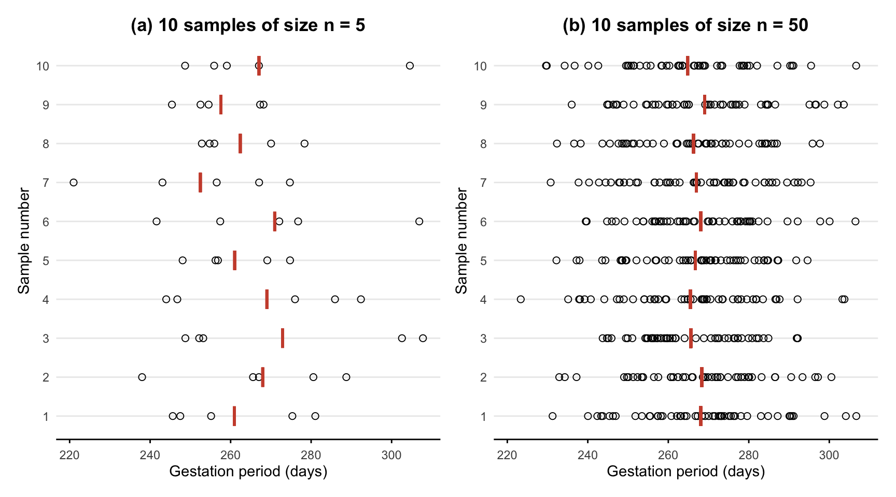
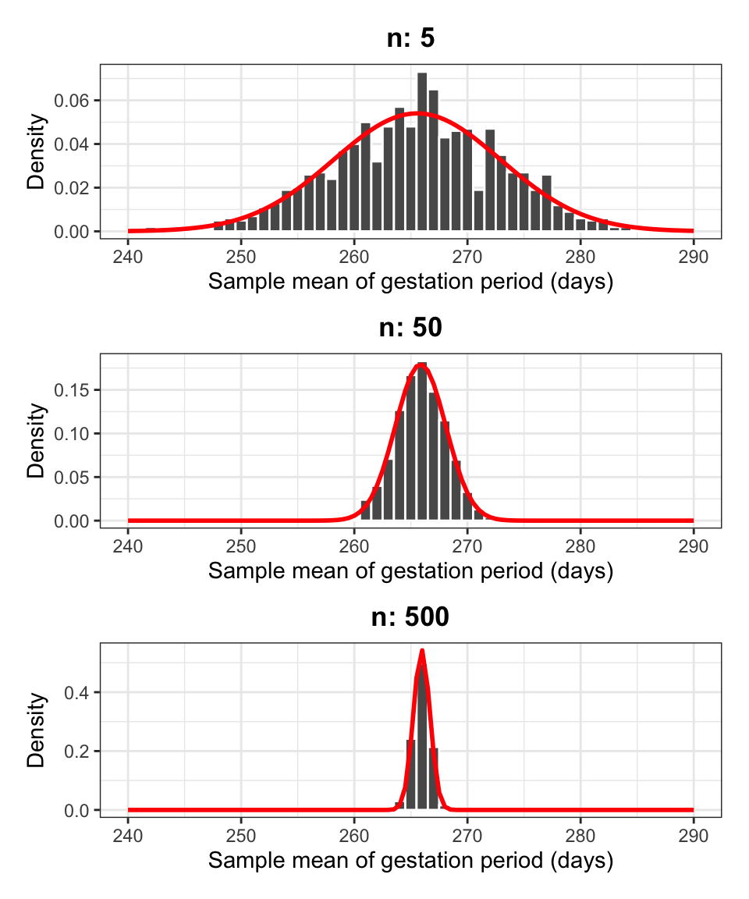
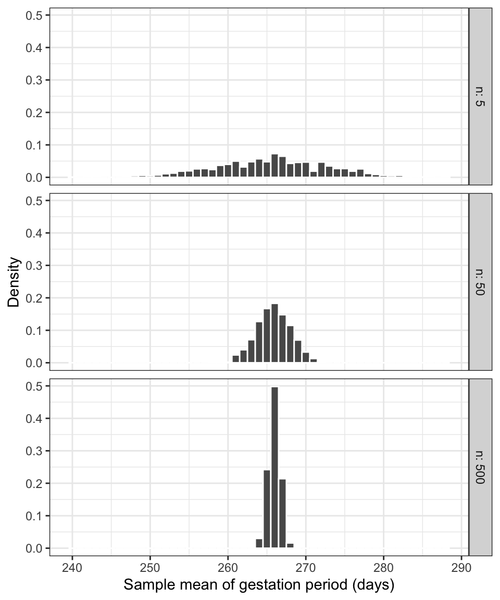
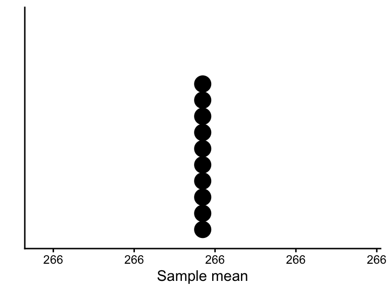
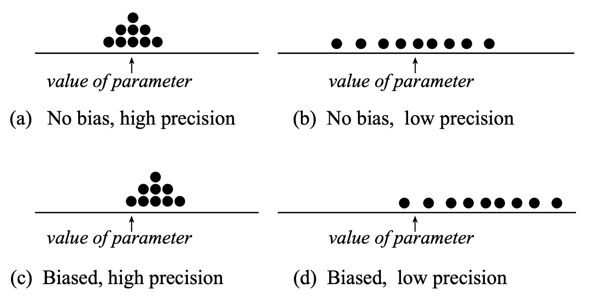

library(tidyverse)
gest <- read_csv('https://uoepsy.github.io/data/pregnancies.csv')
dim(gest)[1] 49863 2The natural gestation period (in days) for human births is normally distributed in the population with mean 266 days and standard deviation 16 days. This is a special case which rarely happens in practice: we actually know what the distribution looks like in the population.
We will use this unlikely example to study how well does the sample mean estimate the population mean and, to do so, we need to know what the population mean is so that we can compare the estimate and the true value. Remember, however, that in practice the population parameter would not be known.
We will consider data about the gestation period of the 49,863 women who gave birth in Scotland in 2019. These can be found at the following address: https://uoepsy.github.io/data/pregnancies.csv
First, we read the population data:
library(tidyverse)
gest <- read_csv('https://uoepsy.github.io/data/pregnancies.csv')
dim(gest)[1] 49863 2The data set contains information about 49,863 cases. For each case an identifier and the length of pregnancy Look at the top six rows of the data set (the “head”):
head(gest)# A tibble: 6 × 2
id gest_period
<dbl> <dbl>
1 1 256.
2 2 269.
3 3 253.
4 4 292.
5 5 271.
6 6 253.We now want to investigate how much the sample means will vary from sample to sample. To do so, we will take many samples from the population of all gestation periods, and compute for each sample the mean.
To do so, we will load a function which we prepared for you called rep_sample_n(). This function is used to take a sample of \(n\) units from the population, and it lets you repeat this process many times.
To get the function in your computer, run this code:
source('https://uoepsy.github.io/files/rep_sample_n.R')NOTE
You need to copy and paste the line
source('https://uoepsy.github.io/files/rep_sample_n.R')at the top of each file in which you want to use the rep_sample_n() function.
The function takes the following arguments:
rep_sample_n(data, n = <sample size>, samples = <how many samples>)data is the population
n is the sample size
samples is how many samples of size \(n\) you want to take
Before doing anything involving random sampling, it is good practice to set the random seed. This is to ensure reproducibility of the results. Random number generation in R works by specifying a starting seed, and then numbers are generated starting from there.
Set the random seed to any number you wish. Depending on the number, you will get the same results as me or not:
set.seed(1234)Obtain 10 samples of \(n = 5\) individuals each:
samples <- rep_sample_n(gest, n = 5, samples = 10)
samples# A tibble: 50 × 3
sample id gest_period
<dbl> <dbl> <dbl>
1 1 40784 255.
2 1 40854 275.
3 1 41964 281.
4 1 15241 246.
5 1 33702 247.
6 2 35716 267.
7 2 17487 289.
8 2 15220 266.
9 2 19838 238.
10 2 2622 281.
# ℹ 40 more rowsThe samples data frame contains 3 columns:
sample, telling us which sample each row refers to
id, telling us the units chosen to enter each sample
gest_period, telling us the gestation period (in days) of each individual
Note that the tibble samples has 50 rows, which is given by 5 individuals in each sample * 10 samples.
You can inspect the sample data in the following interactive table in which the data corresponding to each sample have been colour-coded so that you can distinguish the rows belonging to the 1st, 2nd, …, and 10th sample:
Now, imagine computing the mean of the five observation in each sample. This will lead to 10 means, one for each of the 10 samples (of 5 individuals each).
sample_means <- samples |>
group_by(sample) |>
summarise(mean_gest = mean(gest_period))
sample_means# A tibble: 10 × 2
sample mean_gest
<dbl> <dbl>
1 1 261.
2 2 268.
3 3 273.
4 4 269.
5 5 261.
6 6 271.
7 7 252.
8 8 262.
9 9 258.
10 10 267.As you can see this leads to a tibble having 10 rows (one for each sample), where each row is a mean computed from the 5 individuals which were chosen to enter the sample.
The gestation period (in days) for the first five women sampled wereThis sample has a mean of \(\bar x\) = 260.93 days.
The second sample of 5 women had gestation periodsThe second sample has a mean gestation period of \(\bar x\) = 267.98 days.
In Figure 1 we display the individual gestation periods in each sample as dots, along with the means gestation period \(\bar x\) of each sample. The position of the sample mean is given by a red vertical bar.
We then increased the sample size to 50 women and took 10 samples each of 50 individuals. This set of samples together with their means is also plotted in Figure 1.

Two important points need to be made from Figure Figure 1. First, each sample (and therefore each sample mean) is different. This is due to the randomness of which individuals end up being in each sample. The sample means vary in an unpredictable way, illustrating the fact that \(\bar X\) is a summary of a random experiment (randomly choosing a sample) and hence is a random variable. Secondly, as we increase the sample size from 5 to 50, there appears to be a decrease in the variability of sample means (compare the variability in the vertical bars in panel (a) and panel (b)). That is, with a larger sample size, the sample means fluctuate less and are more “consistent”.
To further investigate the variability of sample means, we will now generate many more sample means computed on:
We will also add at the end of each tibble a column specifying the sample size. In the first tibble, mutate(n = 5) creates a column called n where all values will be 5, to remind ourselves that those means were computed with samples of size \(n = 5\). Remember that mutate() takes a tibble and creates a new column or changes an existing one.
# (a) 1,000 means from 1,000 samples of 5 women each
sample_means_5 <- rep_sample_n(gest, n = 5, samples = 1000) |>
group_by(sample) |>
summarise(mean_gest = mean(gest_period)) |>
mutate(n = 5)
head(sample_means_5)# A tibble: 6 × 3
sample mean_gest n
<dbl> <dbl> <dbl>
1 1 267. 5
2 2 263. 5
3 3 255. 5
4 4 269. 5
5 5 267. 5
6 6 266. 5# (b) 1,000 means from 1,000 samples of 50 women each
sample_means_50 <- rep_sample_n(gest, n = 50, samples = 1000) |>
group_by(sample) |>
summarise(mean_gest = mean(gest_period)) |>
mutate(n = 50)
head(sample_means_50)# A tibble: 6 × 3
sample mean_gest n
<dbl> <dbl> <dbl>
1 1 263. 50
2 2 262. 50
3 3 269. 50
4 4 266. 50
5 5 267. 50
6 6 268. 50# (c) 1,000 means from 1,000 samples of 500 women each
sample_means_500 <- rep_sample_n(gest, n = 500, samples = 1000) |>
group_by(sample) |>
summarise(mean_gest = mean(gest_period)) |>
mutate(n = 500)
head(sample_means_500)# A tibble: 6 × 3
sample mean_gest n
<dbl> <dbl> <dbl>
1 1 265. 500
2 2 265. 500
3 3 267. 500
4 4 266. 500
5 5 265. 500
6 6 265. 500We now combine the above datasets of sample means for different sample sizes into a unique tibble. The function bind_rows() takes multiple tibbles and stacks them under each other.
sample_means_n <- bind_rows(sample_means_5,
sample_means_50,
sample_means_500)We now plot three different density histograms showing the distribution of 1,000 sample means computed from samples of size 5, 50, and 500.
This would correspond to creating a histogram of the “red vertical bars” from Figure Figure 1, the only difference is that we have many more samples (1,000).
ggplot(sample_means_n) +
geom_histogram(aes(mean_gest, after_stat(density)),
color = 'white', binwidth = 1) +
facet_grid(n ~ ., labeller = label_both) +
theme_bw() +
labs(x = 'Sample mean of gestation period (days)', y = 'Density')
Each of the density histograms above displays the distribution of the sample mean, computed on samples of the same size and from the same population.
Such a distribution is called the sampling distribution of the sample mean.
Sampling distribution
The sampling distribution of a statistic is the distribution of a sample statistic computed on many different samples of the same size from the same population.
A sampling distribution shows how the statistic varies from sample to sample due to sampling variation.
What is the mean and standard deviation of each histogram?
sample_means_n |>
group_by(n) |>
summarise(mean_xbar = mean(mean_gest),
sd_xbar = sd(mean_gest))# A tibble: 3 × 3
n mean_xbar sd_xbar
<dbl> <dbl> <dbl>
1 5 266. 7.38
2 50 266. 2.23
3 500 266. 0.734Compare these quantities to the population mean and standard deviation: \(\mu\) = 266 and \(\sigma\) = 16.1.
Regardless of the size of the samples we were drawing (5, 50, or 500), the average of the sample means was equal to the population mean. However, the standard deviation of the sample means was smaller than the population mean. The variability in sample means also decreases as the sample size increases.
There is an interesting pattern in the decrease, which we will now verify. It can be proved that the standard deviation of the sample mean \(\sigma_{\bar X} = \frac{\sigma}{\sqrt{n}}\), i.e. the population standard deviation divided by \(\sqrt{n}\) with \(n\) being the sample size.
Obtain the population standard deviation. Remember the entire population data were called gest and in this case we are very lucky to have the data for the entire population, typically we wouldn’t have those and neither the population standard deviation.
sigma <- sd(gest$gest_period)Now compute add a column that compares the SD from sampling with the theory-based one:
sample_means_n |>
group_by(n) |>
summarise(mean_xbar = mean(mean_gest),
sd_xbar = sd(mean_gest)) |>
mutate(sd_theory = sigma / sqrt(n))# A tibble: 3 × 4
n mean_xbar sd_xbar sd_theory
<dbl> <dbl> <dbl> <dbl>
1 5 266. 7.38 7.20
2 50 266. 2.23 2.28
3 500 266. 0.734 0.720The last two columns will be closer and closer as we increase the number of different samples we take from the population (e.g. 5,000 or 10,000 or even more samples.)
The following result holds: \[ \begin{aligned} \mu_{\bar X} &= \mu = \text{Population mean} \\ \sigma_{\bar X} &= \frac{\sigma}{\sqrt{n}} = \frac{\text{Population standard deviation}}{\sqrt{\text{Sample size}}} \end{aligned} \]
Because on average the sample mean (i.e. the estimate) is equal to the population mean (i.e. the parameter), the sample mean \(\bar X\) is an unbiased estimator of the population mean. In other words, it does not consistently “miss” the target. (However, if your sampling method is biased, the sample mean will be biased too.)
The standard deviation of the sample means tells us that the variability in the sample means gets smaller smaller as the sample size increases. Because \(\sqrt{4} = 2\) we halve \(\sigma_{\bar X}\) by making the sample size 4 times as large. Similarly, as \(\sqrt{9} = 3\), we reduce \(\sigma_{\bar X}\) by one third by making the sample size 9 times as large.
The variability, or spread, of the sampling distribution shows how much the sample statistics tend to vary from sample to sample. This is key in understanding how accurate our estimate of the population parameter, based on just one sample, will be.
Recall that the standard deviation tells us the size of a typical deviation from the mean. Here, the mean is the population parameter \(\mu\), and a deviation of \(\bar x\) from \(\mu\) is called an estimation error. Hence, the standard deviation of the sample mean is called the standard error of the mean. This tells us the typical estimation error that we commit when we estimate a population mean with a sample mean.
Standard error
The standard error of a statistic, denoted \(SE\), is the standard deviation of its sampling distribution.
So, the standard error of the mean can be either computed as the standard deviation of the sampling distribution, or using the formula \[ SE = \sigma_{\bar X} = \frac{\sigma}{\sqrt{n}} \]
We also notice that the density histograms in Figure 2 are symmetric and bell-shaped. Hence, they follow the shape of the normal curve.

The random variable \(\bar X\) follows a normal distribution: \[ \bar X \sim N(\mu,\ SE) \]
We can also compute a z-score. We have that: \[ Z = \frac{\bar X - \mu}{SE} \sim N(0, 1) \]
We know that for a normally distributed random variable, approximately 95% of all values fall within two standard deviations of its mean. Thus, for approximately 95% of all samples, the sample means falls within \(\pm 2 SE\) of the population mean \(\mu\). Similarly, since \(P(-3 < Z < 3) = 0.997\), it is even more rare to get a sample mean which is more than three standard errors away from the population mean (only 0.3% of the times).
This suggests that:
The standard error \(SE\) is a measure of precision of \(\bar x\) as an estimate of \(\mu\).
If is a pretty safe bet to say that the true value of \(\mu\) lies somewhere between \(\bar x - 2 SE\) and \(\bar x + 2 SE\).
We will doubt any hypothesis specifying that the population mean is \(\mu\) when the value \(\mu\) is more than \(2 SE\) away from the sample mean we got from our data, \(\bar x\). We shall be even more suspicious when the hypothesised value \(\mu\) is more than \(3 SE\) away from \(\bar x\).
Centre and shape of a sampling distribution
Centre: If samples are randomly selected, the sampling distribution will be centred around the population parameter. (No bias)
Shape: For most of the statistics we consider, if the sample size is large enough, the sampling distribution will follow a normal distribution, i.e. it is symmetric and bell-shaped. (Central Limit Theorem)
Clearly, we can compute sampling distributions for other statistics too: the proportion, the standard deviation, …
This requires the following steps:
Obtaining multiple samples, all of the same size, from the same population;
For each sample, calculate the value of the statistic;
Plot the distribution of the computed statistics.
You might be wondering: why did we take multiple samples of size \(n\) from the population when, in practice, we can only afford to take one?
This is a good question. We have taken multiple samples to show how the estimation error varies with the sample size. We saw in Figure 2, shown again below, that smaller sample sizes lead to more variable statistics, while larger sample sizes lead to more precise statistics, i.e. the estimates are more concentrated around the true parameter value.

This teaches us that, when we have to design a study, it is better to obtain just one sample with size \(n\) as large as we can afford.
What would the sampling distribution of the mean look like if we could afford to take samples as big as the entire population, i.e. of size \(n = N\)?
If you can, it is best to measure the entire population.
If we could afford to measure the entire population, then we would find the exact value of the parameter all the time. By taking multiple samples of size equal to the entire population, every time we would obtain the population parameter exactly, so the distribution would look like a histogram with a single bar on top of the true value: we would find the true parameter with a probability of one, and the estimation error would be 0.
pop_means <- gest |>
rep_sample_n(n = nrow(gest), samples = 10) |>
group_by(sample) |>
summarise(mean_gest = mean(gest_period))
pop_means# A tibble: 10 × 2
sample mean_gest
<dbl> <dbl>
1 1 266.
2 2 266.
3 3 266.
4 4 266.
5 5 266.
6 6 266.
7 7 266.
8 8 266.
9 9 266.
10 10 266.The following is a dotplot of the means computed above:

To summarize:
We have high precision when the estimates are less variable, and this happens for a large sample size.
We have no bias when we select samples that are representative of the population, and this happens when we do random sampling. No bias means that the estimates will be centred at the true population parameter to be estimated.
